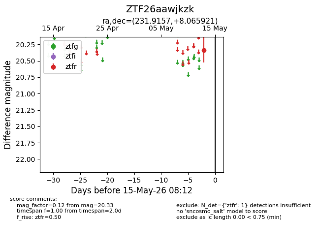
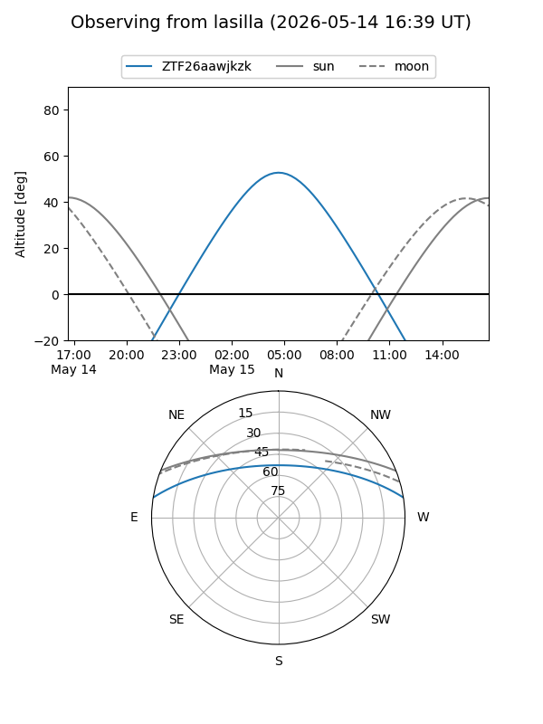
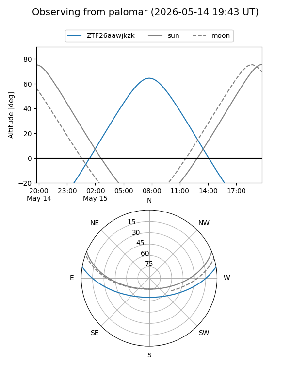

ZTF26aawjkzk
Target ZTF26aawjkzk at 2026-05-15 08:14
Aliases and brokers:
FINK: link
Lasair: link
ALeRCE: link
alt names
ZTF26aawjkzk (ztf,fink_ztf)
Coordinates:
equatorial (ra, dec) = 231.9157,+8.06592
equatorial (HMS+DMS) = 15:27:39.76,+08:03:57.31
galactic (l, b) = (13.0421,+48.43853)
Flags:
Photometry:
last ztfr=20.33
1 ztfr detections
Lightcurve

Visibility


Additional plots